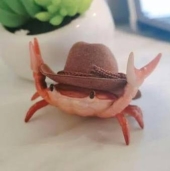

João Henrique Ribeiro Trindade
- Estudante da ADS21 -
Eu tenho 20 anos. Eu comecei a ter interesse nessa area por causa da minha curiosidade ao fazer engenharia reversa. Isso começou com jogos que eu tinha interesse em saber como eles funcionavam, então eu desenvolvi esse interesse em programação, e por conta disso na area em sí. Pra mim a parte mais divertida e tentar compreender como um codigo funciona, mesmo as vezes eu não tendo o conhecimento previo da linguagem de programação, assim eu acabo usando o próprio programa como meu metodo de aprender a linguagem. e isso basicamente resume meu interesse.